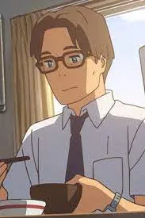
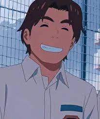
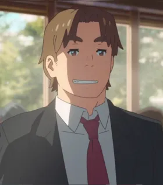
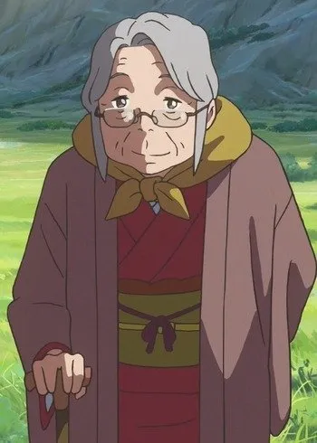
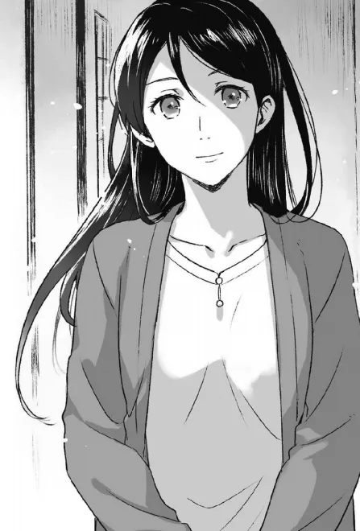
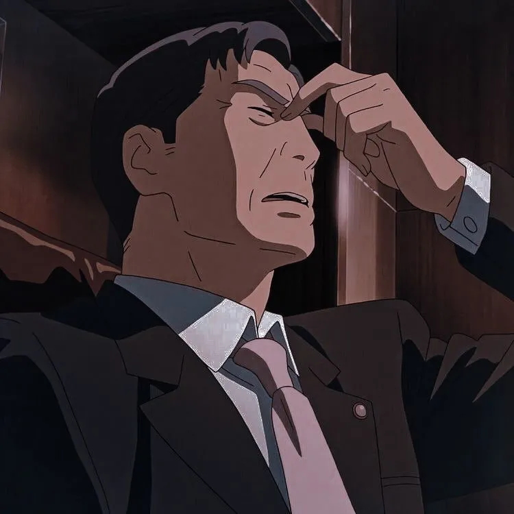
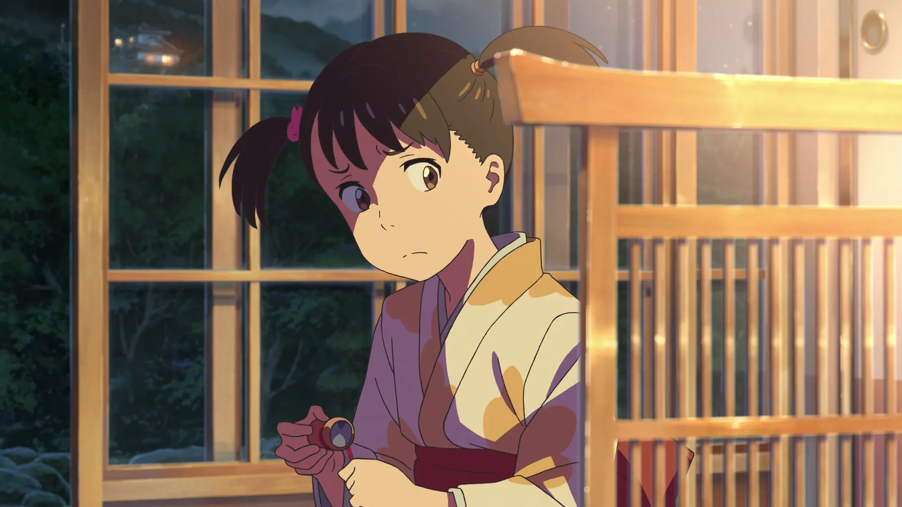
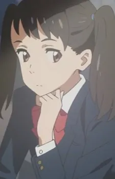
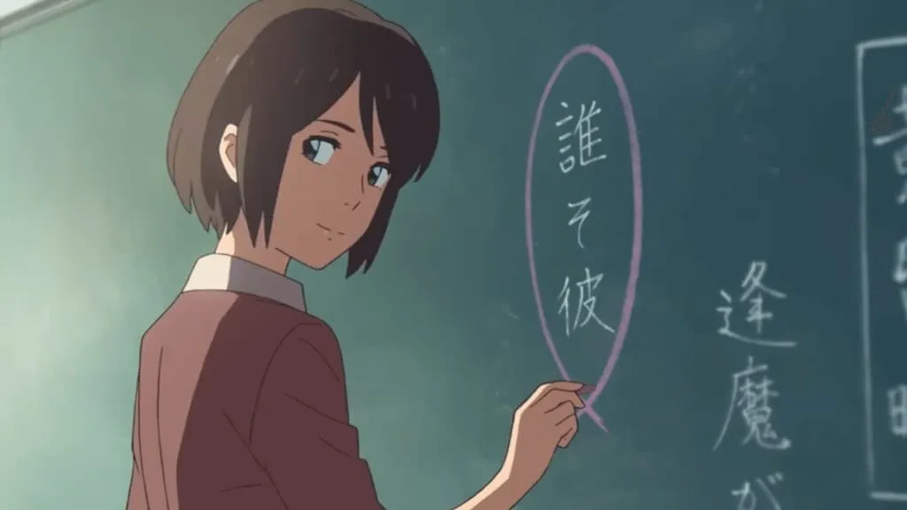

Appearance: He is a middle-aged man with short brown hair. He has brown eyes and wears a pair of rectangular, red glasses.
His name is unknown, but he is voiced by Kazuhiko Inoue
Personality:
He is a hardworking single father that is very responsible and cares for Taki, he takes with Taki to cook breakfast.
His only known relationships is with Taki Tachibana

Appearance: He is a tall young man with a large build. He has light brown hair and free-falling bangs. He also has thick eyebrows and dark brown eyes. When older, he looks similar but becomes larger and more muscular
His name in Japanese is 高木 真太, voiced by Kaito Ishikawa
Personality: He is Taki's closest friend. He often teases him but he cares a lot for his friends and is willing to do anything to help them, especially when they are in need of rescue.
His only known relationships are with Tsukasa Fuji and Taki Tachibana


Appearance : She is an old woman that's short. She has light brown eyes and short grey hair. She often wears her hair in a ponytail with a red braided cord.
Her name in Japanese is 宮水 一葉. Her known birthday is 4th March 1931. She is voiced by Etsuko Ichihara
Personality: Being the maternal grandmother of Mitsuha & Yotsuha, after their mother died ,she was the main maternal figure since their father had very less time pursuing a career in politics. She is very calm and filial person. She is extremely traditional, explaining her job of Town Priestess, and also doesn't like her son-in-law as he rejected their tradition.
Her known relationships are wwith the whole Miyamizu Family , Mitsuha, Yotsuha, Futaba and Toshiki.

Appearance : Not much is known about her but she is a very beautiful and petite woman with fair skin and a pair of light brown eyes. She had long black hair
Her name in Japanese is 宮水 二葉. It's only known that her birthday is in 1971. She is voiced by Sayaka Ohara
Personality: She was a cheerful, optimistic and energetic woman. She always spoke her mind, is very social and is very open and friendly to everyone. She is caring to everyone and is extremely selfless. When she was working as a priestess, she was highly respected and looked up to.
Her known relationships are with the whole Miyamizu Family, Mitsuha,Hitoha, Yotsuha and Toshiki.

Appearance : Toshiki is a tall, middle-aged man. He always has a stern face, without a smile being seen throughout the movie. He has dark gray hair thats combed to the right. He has brown eyes and thick eyebrows
His Japanese name is 宮水 俊樹. His known birthday is in 1959. She is voiced by Masaki Terasoma
Personality: He is a very busy man. He rejected the family he married into's tradition just to follow politics. Which can be seen in him running for mayor for 4 years.
His known relationships:
Mitsuha where he used to be close with Mitsuha but after her mother/his wife died , their relationship becomes ropey. He also embrassed her by scolding her using his megaphone during his campaign.
Futaba who he loved a lot even giving up his job and family name just to be with her
His Parents who are unknown. They had no common ground and also disapproved of his marriage choices and job plans After some certain events, the parents disowned him and told him to never go near them again.

Appearance :She is a young girl with light brown eyes and black hair, which she wears in pigtails with two different hairbands. When she grows older, the hairstyle remains the same only her hair grows longer
Her Japanese name is 宮水 四葉. Her birthday is on July 2nd 2004 She is voiced by Kanon Tani
Personality: Yotsuha is a very smart person. She has very good instincts and is very level-headed. She may claim to be young minded, she is mature enough to know that she doesn't understand everything and is trying to learn more about the world. Yotsuha is more devoted to their family tradition compared to Mitsuha, however she is also growing tired of traditions
Her known relationships are with the Miyamizu family Mitsuha where they both call each other crazy but still love each other, Futaba and Toshiki.


Appearance :She is a middle aged woman, with a bob haircut.She has dark brown hair and brown eyes.
Her Japanese name is 雪野 百香里. Her birthday is on 27 February 1986. She is voiced by Kana Hanazawa
Personality: Not much is known about her, she was only shown as a teacher in the school.
Her known relationships are with Mitsuha, Sayaka, Tessie and their other classmates as she is their literature teacher.
nbsp;
A fun fact is that the director created this character again from the previous movie just to meet the voice actor again!
